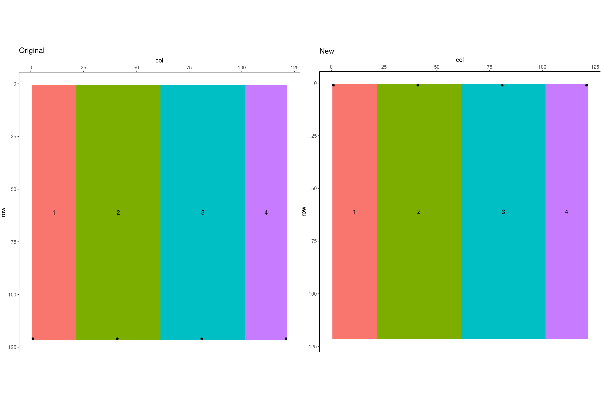

~ 2.22 min to run
Better matching between the programs compared to Hypothetical Hummocky Relief because no opportunity for selecting alternative watershed, no ties to break.
Very similar to R10/R30/I10
Original Pit data
New Pit data
Differences
c <- compare(pit, orig_pit)## Not all PitRec the same## Not all PitVol the same## Not all Varatio the same## Pit area not the same, but within 5 cells## Not all InRec the same## Not all OutRec the samepit[c$PitVol, ] %>% select(ShedNo, ShedArea, PitVol, Varatio)## # A tibble: 1 x 4
## ShedNo ShedArea PitVol Varatio
## <dbl> <int> <dbl> <dbl>
## 1 3 4840 48400 10000orig_pit[c$PitVol, ] %>% select(ShedNo, ShedArea, PitVol, Varatio)## # A tibble: 1 x 4
## ShedNo ShedArea PitVol Varatio
## <int> <int> <dbl> <dbl>
## 1 3 4840 48160 9950.41Original Pond data
New Pond datapond <- pond %>% arrange(ShedNo)
orig_pond <- orig_pond %>% arrange(ShedNo)
c <- compare(pond, orig_pond)## Not all PitRec the same## Not all PitVol the same## Not all Varatio the same## Pit area not the same, but within 5 cells## Not all InRec the same## Not all OutRec the samepond[c$PitVol, ] %>% select(ShedNo, ShedArea, PitVol, Varatio)## # A tibble: 1 x 4
## ShedNo ShedArea PitVol Varatio
## <dbl> <int> <dbl> <dbl>
## 1 3 4840 48400 10000orig_pond[c$PitVol, ] %>% select(ShedNo, ShedArea, PitVol, Varatio)## # A tibble: 1 x 4
## ShedNo ShedArea PitVol Varatio
## <int> <int> <dbl> <dbl>
## 1 3 4840 48160 9950.41Original Fill data
New Fill data
Differences
c <- compare(fill, orig_fill)## Not all PitRec the same## Not all PitVol the same## Not all Varatio the same## Pit area not the same, but within 5 cells## Not all InRec the same## Not all OutRec the samefill[c$PitVol, ] %>% select(ShedNo, ShedArea, PitVol, Varatio)## # A tibble: 1 x 4
## ShedNo ShedArea PitVol Varatio
## <dbl> <int> <dbl> <dbl>
## 1 3 4840 48400 10000orig_fill[c$PitVol, ] %>% select(ShedNo, ShedArea, PitVol, Varatio)## # A tibble: 1 x 4
## ShedNo ShedArea PitVol Varatio
## <int> <int> <dbl> <dbl>
## 1 3 4840 48160 9950.41Black dots indicate pits, or, as this is inverted, peaks.
Here peaks are in different places, but likely due to selection based on ties (as the entire dem is the same elevation in a given column)

ipit <- arrange(ipit, ShedNo)
orig_ipit <- arrange(orig_ipit, ShedNo)c <- compare(ipit, orig_ipit)## Not all PitRec the same## Not all PitVol the same## Not all Varatio the same## Pit area not the same, but within 5 cells## Not all DrainsTo the same## Not all InRec the same## Not all OutRec the sameipit[c$PitVol, ] %>% select(ShedNo, ShedArea, PitVol, Varatio)## # A tibble: 1 x 4
## ShedNo ShedArea PitVol Varatio
## <dbl> <int> <dbl> <dbl>
## 1 4 2420 25410 10500orig_ipit[c$PitVol, ] %>% select(ShedNo, ShedArea, PitVol, Varatio)## # A tibble: 1 x 4
## ShedNo ShedArea PitVol Varatio
## <int> <int> <dbl> <dbl>
## 1 4 2420 25290 10450.41